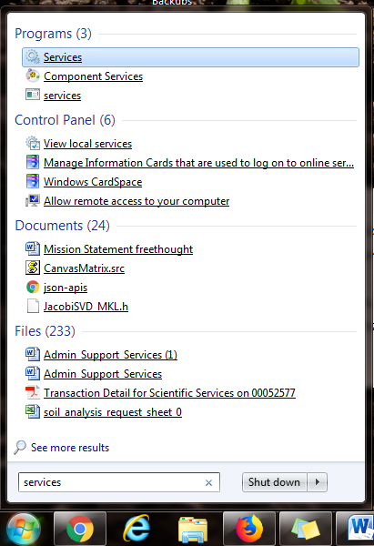
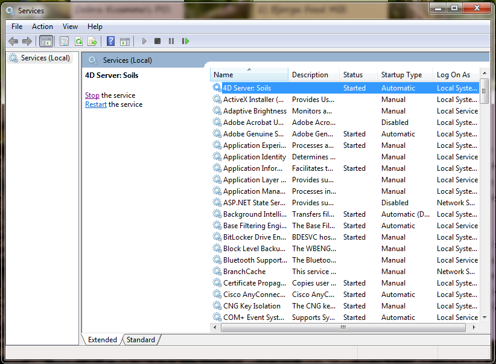

Restarting the server can help with error messages.
You must be logged in on Stephanie's desktop. It is unclear
whether you can be logged in as another user or not.
This is the first troubleshooting step for when you try to log into 4D, but get an
error message that says the database cannot be used. Restarting can also be helpful if
the database is crashing often and you don't know why.
Click the Windows button in the lower left corner of the screen.
In the menu that pops up, type in "Services" and select that option.
Figure: Fig 1. Start menu with 'Services' option selected 
When it opens, the top item should be 4D Server: Soils. Click on it once to
highlight it. On the left side, click "Stop the service".
Figure: Fig. 2: 'Services' window screenshot 
When the service is stopped, click "Start the Service."